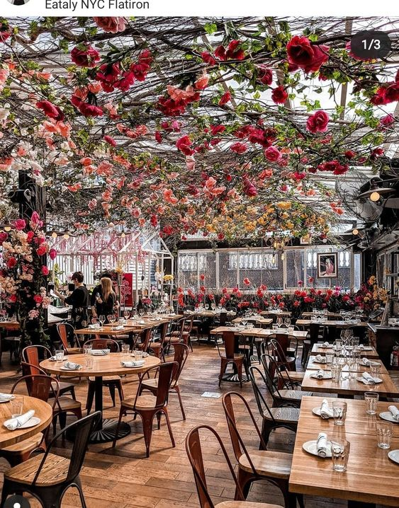

Buheira
Solaria adalah restoran lokal asli Indonesia yang berdiri sejak tahun 1995, merupakan restoran keluarga dengan konsep casual dining yang menyajikan menu-menu makanan khas yang disajikan secara fresh food (dimasak setelah makanan dipsesan).
12 Seat left
200 M